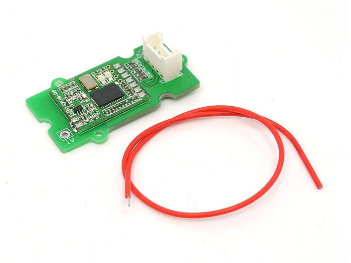
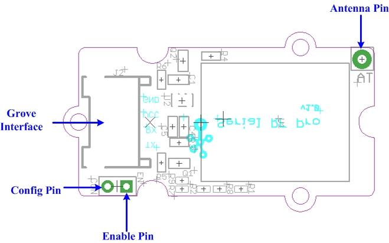
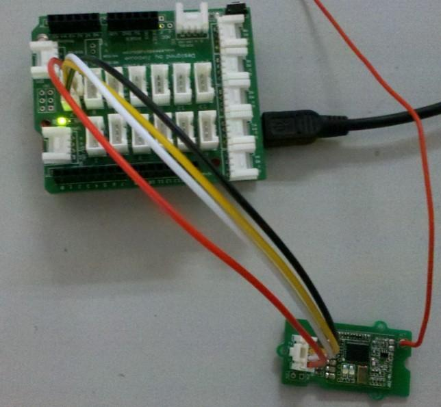
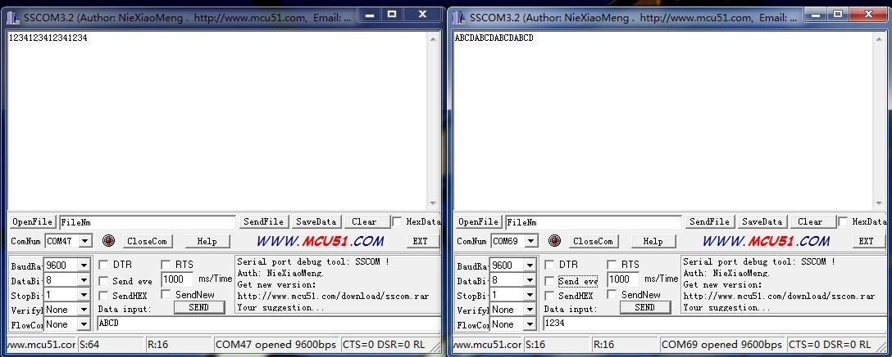
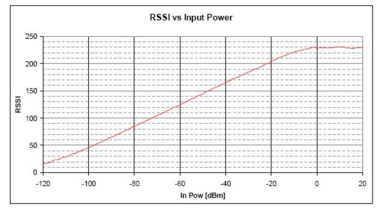

Grove-Serial RF Pro is a low cost, high performance transparent FSK transceiver with operating at 433/470/868/915 MHz, and the best performance is at 433M(Default). There is a UART interface that is easy to realize the wireless data transmission with only providing the UART data. It is flexible for the users to set the UART baud rate, frequency, output power, data rate, frequency deviation, receiving bandwidth etc parameters. It is your ideal choice for designing wireless data transmission products which can be widely used on wireless data transmission field.
Model: WLS31625P

| Item | Min | Typical | Max | Unit |
|---|---|---|---|---|
| Working Voltage | 4.75 | 5.0 | 5.25 | VDC |
| Current at sleep mode | 1 | uA | ||
| output power | 1 | - | 20 | dB |
| Communication Speed | 1.2 | - | 115.2 | Kbps |
| Transmission Distance(Max) | 1 | Km | ||
| Sensitivity | -117 | dBm | ||
| Communication Protocol | UART | / | ||
| Operate Temperature | -40 | - | +85 | ℃ |

| Pad Type (5V Logic level) | Description |
|---|---|
| G(GND) | Ground port |
| EN(ENABLE) | Set low for normal mode as data transceiver (Default is low with 10k to GND). Set high to put into sleep mode. |
| CON(CONFIG) | Set low for configuration mode (connect to GND). Set high for communication (Default is high). |
| RX | UART Data input |
| TX | UART Data output |
| V(VCC) | Designed for 5V(+)supply |
| AT | Antenna pin |
Here we show two RF Pro Grove units mutually transmitting/receiving data. You need two RF Pro Grove units and two Seeeduino to do the demo.

The module will be ready for Config status if ENABLE pin is low, CONFIG pin is low. It will be in Config
if the red and green LED keep lighting. Then you can Config & inquiry on the module.
The Config instruction format is as AA+FA+[instruction]+[parameter]. The instruction is 1 byte, the parameter is the HEX data of 0-4 bytes (in big-endian ordering, with the high byte before the low byte).
Note:
//send data routine // link between the computer and the SoftSerial Shield //at 9600 bps 8-N-1 //Computer is connected to Hardware UART //SoftSerial Shield is connected to the Software UART:D2&D3 #include <SoftwareSerial.h> SoftwareSerial SoftSerial(11, 10); // TX, RX int buffer[64]; int count=0; void setup() { SoftSerial.begin(9600); // the SoftSerial baud rate Serial.begin(9600); // the Serial port of Arduino baud rate. } void loop() { delay(1000); SoftSerial.write(0xAA); SoftSerial.write(0xFA); SoftSerial.write(0xE1); if (SoftSerial.available()) // if date is coming from software serial port ==> data is coming from SoftSerial shield { while(SoftSerial.available()) // reading data into char array { buffer[count++]=SoftSerial.read(); // writing data into array if(count == 64)break; } for (int i=0; i<count; i++) { Serial.print(buffer[i],HEX); // if no data transmission ends, write buffer to hardware serial port } clearBufferArray(); // call clearBufferArray function to clear the stored data from the array count = 0; // set counter of while loop to zero } if (Serial.available()) // if data is available on hardware serial port ==> data is coming from PC or notebook SoftSerial.write(Serial.read()); // write it to the SoftSerial shield Serial.println("..."); } void clearBufferArray() // function to clear buffer array { for (int i=0; i<count;i++) { buffer[i]=NULL;} // clear all index of array with command NULL }

The following table lists the commands and responses involved in interacting with Serial RF Pro v0.9b.
| Instruction(HEX) | Description | Config instruction(HEX) | Return Value |
|---|---|---|---|
| F0 | Reset to default parameters (except UART transfer speed), no parameter follows | AA FA F0 | 4F 4B 0D 0A （OK /r/n) |
| E1 | Reading the current Config parameter, no parameter follows | AA FA E1 | 16 bytes: (following the order below)
working frequency-4 bytes, wireless data rate-4 bytes, receiving bandwidth-2 bytes, frequency deviation-1 byte, transmission power-1 byte, UART transfer speed-4 bytes |
| D2 | Set up working frequency，[parameter]4 byte，[parameter] Unit :Hz.
Set up range:
|
Example:
|
4F 4B 0D 0A （OK /r/n) |
| C3 | Set up wireless data rate，[parameter]4 byte，[parameter] unit :bps.
Set up range:1200-115200 bps |
Example:
|
4F 4B 0D 0A （OK /r/n) |
| B4 | Set up receiving bandwidth，[parameter]2 byte，[parameter]Unit :KHz
Set up range:30-620KHz |
Example:
|
4F 4B 0D 0A （OK /r/n) |
| A5 | Set up frequency deviation，[parameter]1 byte，[parameter]Unit :KHz
Set up range:10-160KHz |
Example:
|
4F 4B 0D 0A （OK /r/n) |
| 96 | Set up transmission power ,[parameter]1 byte，0~7level
Set up range:0-7level(1-20 dBm) |
Example:
Transmission power level Transmission power 7 +20dBm 6 +17dBm 5 +14dBm 4 +11dBm 3 +8dBm 2 +5dBm 1 +2dBm 0 +1dBm |
4F 4B 0D 0A （OK /r/n) |
| 1E | Set up UART transfer speed，[parameter]4 byte，[parameter] unit: bps
Set up range:1200-115200 bps |
Example:
|
4F 4B 0D 0A （OK /r/n) |
| 87 | Wireless signal strength when receiving useful data, follows no [parameter] | Config Instruction：AA FA 87
 |
RSSI value is 8 bit, range: 0-255 |
| 78 | Disturb wireless signal strength, follows no [parameter]
Note：
|
Config Instruction：AA FA 78 | RSSI value is 8 bit , range: 0-255 |
| Revision | Descriptions | Release |
|---|---|---|
| v0.9b | Initial public release | date |
If you have questions or other better design ideas, you can go to our forum or wish to discuss.
Copyright (c) 2008-2016 Seeed Development Limited (www.seeedstudio.com / www.seeed.cc)